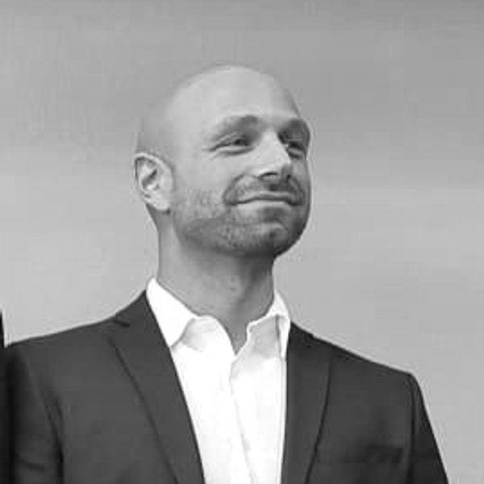
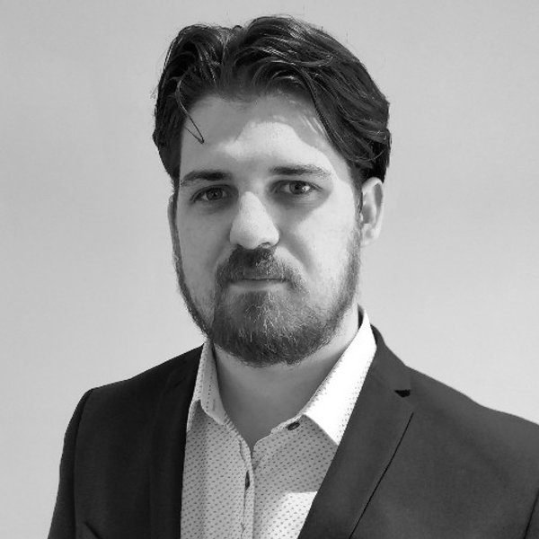
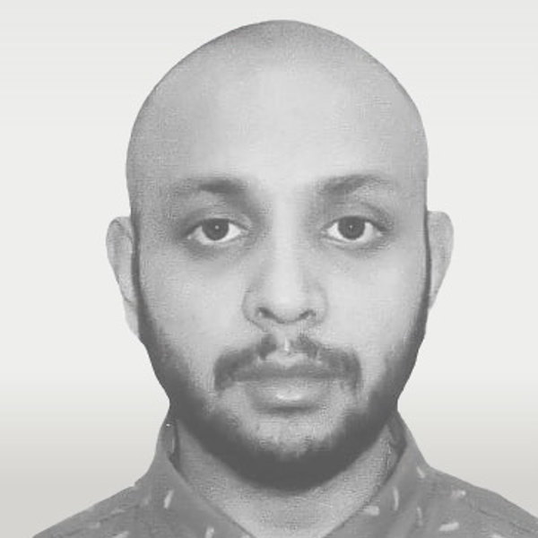
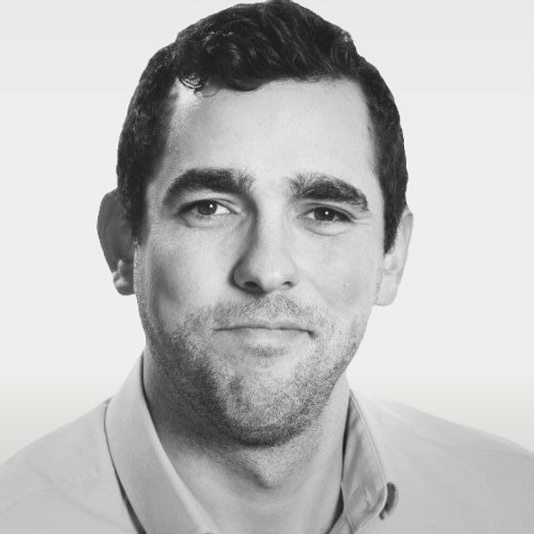
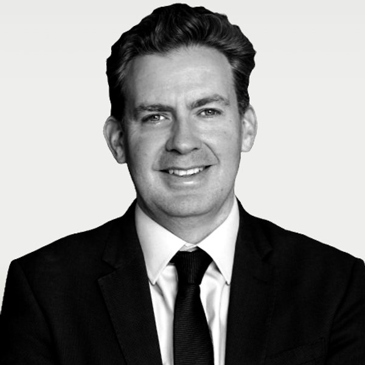
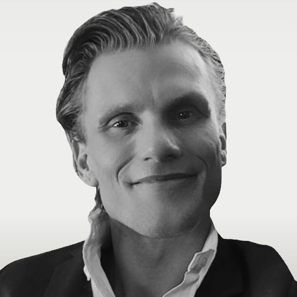
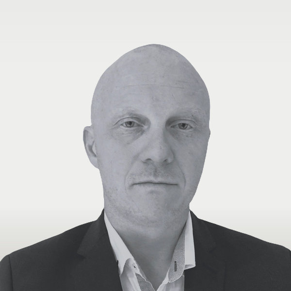

Sep 2, 2025
Scale42 and GIG plan 50 MW data centre in Iceland
Coverage in Data Centre Dynamics on the Bakki joint venture and its initial capacity.
Read →Next-generation European digital infrastructure
Scale42 develops and operates wholesale, AI-ready data centres in Norway, Finland, Sweden and Iceland — co-located with abundant renewable power, purpose-built for high-density compute.
Pan-Nordic portfolio
A 1.7 GW pipeline anchored on hydro, geothermal and other long-duration renewables.
Low-cost clean energy
Accelerated computing
Next-generation data centres
The platform
Our data centres are located where renewable power is abundant. This energy-first strategy lets customers operate AI compute infrastructure at substantially lower cost while maintaining industry-leading sustainability credentials.
Our facilities are purpose-built to support high-density AI and high-performance computing environments. Designs incorporate advanced cooling, high-capacity power delivery and the highly efficient infrastructure required to support modern compute deployments.
Scale42 develops modular, standardised data centre facilities providing wholesale AI-ready space. Customers deploy and operate their own compute infrastructure while Scale42 delivers the secure, high-power, energy-efficient environment required to operate at scale.
Sites co-located with hydro, geothermal and other long-duration renewable baseload — locking in competitive, predictable energy pricing.
Advanced cooling, high-capacity power delivery and efficient infrastructure designed for GPU/TPU/ASIC-centric workloads at scale.
You deploy and operate your compute. We deliver the secure, high-power, energy-efficient environment around it.
Sustainability
Every Scale42 site is sized against long-duration renewable baseload — hydro in Norway, geothermal in Iceland, mixed renewables in Finland and Sweden. Targets validated per site at energisation.
Across the active pipeline
For 12.5 MW module deployments
Nordic grid average is among the lowest globally
Where district networks make it viable
Targeting: ISO 27001 ISO 14001 ISO 50001 EU CSRD aligned Uptime Tier III design
Modular AI data centre design
A modular architecture enables rapid build-out and predictable expansion — supporting high-density computing environments with highly efficient cooling and power systems. Designed for direct-liquid-cooling (DLC) and air-cooled GPU clusters from 50 kW to 130 kW per rack.
Standardised, repeatable shell-and-core. Combine 4× for 50 MW campuses, 8× for 100 MW, scale to 500 MW+ flagship sites.
Designed for DLC and immersion at the rack, supporting high-density GPU/TPU clusters from 50–130 kW.
Neutral wholesale shell. You bring the compute and operate it; we deliver power, fibre and the secure envelope.
The shift
Legacy data centres
Built primarily to serve consumer-facing software-as-a-service applications, legacy data centres lock in high CAPEX and OPEX through a focus on:
This legacy infrastructure:
Together, these contribute to a large physical footprint, further locking in CAPEX and OPEX.
Next-generation data centres
Next-generation data centres — e.g. built to train complex AI models — can benefit from significantly lower CAPEX & OPEX by focusing on:
They are typically:
High equipment density and out-of-city locations enable a smaller footprint and dramatically lower CAPEX and OPEX vs legacy data centres.
The founders
CEO
7+ years in data centre development. Business strategy & energy market expertise. Led team from start-up to 8-figure exit. Commercial property background.
in
CDO
5+ years in data centre development. High-voltage power systems test & integration. 15+ years electrical engineering, including North Sea oil & gas.
in
CTO
7+ years in data centre development. Data centre system design & management. 20+ years in IT systems administration, technical and service roles in the UK.
inThe team

COO
4+ years in data centre operations & development. MEng petroleum engineer. AgriTech & circular economy subject matter expert.
inIT Director
Data centre design, build & operations. 25+ years in IT solutions development. Networking, system integration & supplier management.
inCSO
Corporate strategy and capital raising. 11 years in research & corporate strategy at one of Europe's preeminent hedge funds. Corporate finance experience.
in
CIO
Information, data, research & technical management. 8+ years in geospatial intelligence and innovation. ESA & UK Space Agency contractor.
in
CFO
15 years across technology, FinTech and Life Sciences. Closing significant funding rounds and PE shareholder agreements. Built finance & compliance teams.
in
Liaison Officer
13+ years in North Sea oil & gas. Field engineer and supervisor. Energy saving and technical insulation.
in
Senior Project Manager
Mechanical-electrical and construction-hydropower engineer. 18+ years as worldwide technical manager, project manager and engineer. International project leadership.
inExecutive Assistant
16+ years operations and team management. Group financial management. Time management.
inPartners & customers
Joint venture and commercial partnerships across the Nordic energy and digital infrastructure ecosystem.
GIG — joint venture partner. Scale42 is built and capitalised together with GIG, providing the financial backing and energy-sector relationships behind the pipeline.
Posts
Sep 2, 2025
Coverage in Data Centre Dynamics on the Bakki joint venture and its initial capacity.
Read →
Sep 2, 2025
Joint venture creating an integrated energy and digital infrastructure platform across the Nordics.
Read →
Apr 29, 2025
GIG Ltd and Scale42 announce advanced discussions for the creation of a joint venture focused on integrated infrastructure.
Read →
Mar 27, 2025
Yle reports on Scale42's Finnish project - construction targeted for early 2026.
Read →
Jan 29, 2025
Will Tasney, Thomas Beaton and Jamie Stewart on what algorithmic efficiency means for the dispersion of AI compute demand.
Read →Contact
Enter your email address below and our team will be in touch.